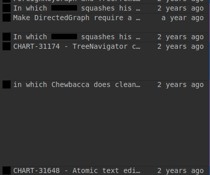
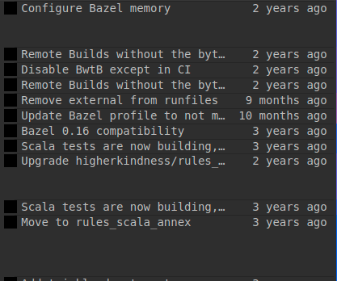

Eng @ Lucid - Cracking the Code Review
What is a Code Review?
- A final step in the development process
-
Have your code looked over and tested by your peers
- Especially effective if peers are experts in that section of the code
Why do we do Code Reviews?
- Code quality matters!
- Fresh, unbiased eyes can find errors and opportunities for improvement
-
Software is complicated
- Even expert code authors have an incomplete picture of the system in their minds
What does a Good Code Review Look Like?
- Thorough; identifies relevant issues to fix
- Makes good use of everyone's time
- Modular, easy to follow
- Leaves code accessible for future developers
- Effectively transfers knowledge
In this presentation:
How can I make my code reviews more effective as a
- code author?
- code reviewer?
Responsibilities of the Code Author
- Create well-organized code changes
- Pick the right reviewers
- Empower reviewers be more effective
- Be respectful of reviewers’ time
1: Before Starting a Story
Good code review practices can always be added in later, but beginning with the end in mind always makes the process easier.
Naming Conventions
For branches, commits, and pull requests
What's in a Name?
-
Branch and PR names are temporary
- Sensible names still help you and reviewers to quickly swap contexts
-
Commit names are permanent
- Good names make git blame and git log easier to work with
- More on this later...
Branch Naming Conventions
- Succinct summary (or Jira issue title)
- Jira issue number (optional)
- Jira can do all of this for you:

Accessed by clicking "Create Branch" on the
right bar of a Jira ticket
Pull Request Naming Conventions
- Human-readable title
- Default PR name is taken directly from branch name
-
Most often viewed in your reviewers' email inbox
- Choose a name that will provide immediate context for the diff and comments they are about to read
Which of these provides context?
A Note About Acceptance Criteria
- Relied on by QA to know what features to test for your story
- Can inform code reviewers as well!
- Clearly defines expected outcome of a story
- Consider defining Acceptance Criteria as a team before beginning feature work
- Update Acceptance Criteria before opening PR to include prerequisites / setup steps
Before Starting: Summary
- Name your branches carefully
- Plan Acceptance Criteria ahead of time
2: While Developing a Story
How you approach writing code will have a strong impact on how effectively others can review your code.
Effective Commit Management
- The smallest "unit" of cohesive code changes
- Remains in git history forever
-
How well does this commit stand by itself in terms of:
- Descriptive title and explanation that provide context for changes?
- Code changes that all fit together into one logical unit?
- Changes that compile, run, and pass formatting and tests?
Commit Messages

Source: xkcd.com
Anatomy of a Commit Message
Git treats the first line of a commit message as a title or summary, and all subsequent lines as a description
$ git log
commit ca1f8488d2393460f3b96b02c6301c74a5cfd445
Author: Dan Mercer <dmercer@lucidchart.com>
Date: Mon Jul 22 10:34:10 2019 -0600
CHART-33957 - One-line fix for google slides auth flow.
The ConversionClient was wrapping the XHR error in an Error, meaning the caller
could no longer check the status code of the HTTP response
(googleslidesdialog.ts line 344).
This bug was introduced in 65928ff4695cfae567b1e702a354ff985a17df5f.$ git log --oneline
ca1f8488d23 CHART-33957 - One-line fix for google slides auth flow.Which ones would you prefer in a git blame?
 vs Commit Message Essentials
-
Commit message titles must contain the following:
- Summary of what changed
- 50 character limit (ideally)
- Direct language ("When applied, this commit will _______")
-
Commit message bodies must contain the following:
- Jira ticket number(s)
-
Commit message bodies may contain the following:
- Summary of changes
- Reasoning behind the changes
- Cute flavor text ("In which our hero...")
- References to other commits
- Complaining about Torgy
Further reading: https://lucidatlassian.atlassian.net/l/c/EzGewXDh
Modular Commits
- Modular commits (and pull requests) are easier to review effectively
-
Single Responsibility Principle
- A good commit (or pull request) solves one clear problem and does it well
- One major change per commit
- Keep large refactoring or formatting changes in separate commits from feature work
-
1:1 mapping between issue in JIRA and pull request
- Leverage subtasks for more complex stories
How to Identify a Modular Commit
- Commits limited to one major change and other essential changes that stem from it
- Commits that touch a file for 1-2 reasons
- Primary PR efforts are preceeded by refactoring commits that enable the main feature
- Avoid "Formatting," "Make it compile," or "PR Fixes"
-
Where possible:
- Ensure every commit compiles on its own
- Run the formatter before committing
- Bundle unit tests into same commit as feature work
Tips to Create Modular Commits
- Before starting a project, review existing code to identify possible strategy for breaking up commits
- When opportunities for small deviations or refactors come up during development, git stash existing work first
- Review code when feature nears completion to identify isolated changes and commit separately using git add -p
- Patch committed but unmerged code changes with
git commit --amend, or git add -p and git rebase -i
While Developing: Summary
- Practice good commit hygiene
- Commit title and message conventions
- Modular commits
3: Before Opening the Pull Request
Or, Pull Request Best Practices
Keep Pull Requests Small
-
Small in terms of:
- Files changed
- Lines changed
- Feature set / surface area
-
Smaller code reviews get reviewed more thoroughly
- Break big features into small but complete changes
- Push/review incremental changes frequently
- Avoid asking reviewers to stare at your code for hours
- Not always possible; just do the best you can

Ask a programmer to review 10 lines of code, and they’ll find 10 issues.
Ask them to review 500 lines, and they’ll just say it looks good.
Don’t Distract with Code Flaws
- Review your own code
- Let your code build
- Talk with feature experts, stakeholders, PMs, UX during development, not just during code review
Review your own code
-
Yes, really
- Pay attention to what you are committing
- Review the code one more time before clicking "Create pull request"
- Minimal time/effort can save time for you and your team
- Find opportunities to refactor or fix bugs
Leverage The Tools
-
Run your code
- In compiled mode
- https://lucidatlassian.atlassian.net/l/c/GHSKinvv
-
Let your code build
- Let static analysis and runtime tests do what they do best
- Merge latest upstream branch into your branch before running builds
Understand Your Own Changes
If you don't know what your code does or why something works the way it does, ask another engineer who does
- Dependency injection
- Pipes
- Angular, Play Framework
- SystemUserRequestModifier
- Database queries
- Implicits
- etc...
Source: https://geekandpoke.typepad.com
Assigning Reviewers
- Primary Reviewer
-
Feature experts
- for finding bugs or understanding complex feature sets
- Often will be CodeOwners
- Don't be afraid to touch base with experts during development
- Be patient when people have a lot of code reviews already
-
Feature novices
- to share knowledge
- QA
- Non-technical stakeholders
Balance between “enough” and “too many”
-
Too many may cause complacency from reviewers
- Combat with a Primary Reviewer
- Also combat complacency with Zoom code reviews
-
Not enough may result in insufficient expertise in reviwers
- Ask highly-specialized or overwhelmed reviewers to review only certain files/functions/lines
- Don’t be a single point of (knowledge) failure
Communicate with your Reviewers
- Inform reviewers of their roles in PR description
- Provide summary of changes after a big push
- Let reviewers know when the PR needs a second pass
- Utilize Slack to remind reviewers if PR is urgent
Self-Documenting Code Reviews
- Leave helpful comments on reviews
- Provide background for the changes
- Explain complex algorithms
- Provide testing tips
- Write good, thorough acceptance criteria
- Review large or complex changes in person
Add Explanations to the Code
- If code reviewers struggle to understand how something works, consider making the code more self-documenting
- If an important question gets answered in the PR comments, consider adding it to the code, too
"Before the PR" Wins
Before the PR: Summary
- Review your own changes first
- Assign reviewers with care
- Communicate with your reviewers
4: Managing an Ongoing Pull Request
Addressing PR feedback without making your reviewers less effective
Fixup! Commits
- Helps keep commits modular; preferred over "PR Changes" commits
- Keeps PR fixes separate from original changes for ease of review
-
Bitbucket enforces that branches with fixup! commits cannot be merged
- Squash commits before merging
- Jenkins should not need to rebuild after a fixup squash
Fixup! Commits
$ git commit --fixup <original commit hash>
# To merge the "fixup" commits into their main commit:
$ git rebase -i --autosquash <master, master-stable, origin/master, etc>Fixup! Commits
- Protip: Push with your fixup! commits, then squash and force push again
- Allows reviewers to see individual fixup!s in response to their feedback
- Allows other reviewers to see your code with your corrections already in place
Merge Conflicts: Rebase vs Merge
-
Pros and cons to both options
- Rebase makes all existing changes look new to reviewers
- Merge makes fixup! commits much harder to work with
- Choose the correct option for the current state of your PR
- Rebase generally preferred, but be sure to communicate to keep reviewers informed!
- Reduce likelihood of merge conflicts by rebasing before you open your PR üòâ
Ongoing PRs: Summary
- Push changes in fixup! commits
- Rebase/merge with care
Responsibilities of the Code Reviewer
- Be timely
- Be thorough
- Review the code, not the author
- Approach reviews with a focused mentality
Source: https://xkcd.com/2138/
Let the Computer Help
- Ensure builds pass
-
Run the code, don’t just read it
- Ask developer for testing suggestions or affected features
- Ask to see running code over Zoom
- Pay attention to acceptance criteria
Timeliness
-
Be timely in reviewing and giving feedback
- Try to review within 1 working day
- Communicate with code author if you are too busy
- Be willing to interrupt your work for high-priority code reviews
Be a Gatekeeper of Code Quality
- Understand our code quality guidelines
- Unit tests
- I18n
- Logging and metrics
- Analytics
- Security concerns
- Performance concerns
- Has merged in latest upstream branch recently
Primary Reviewers
- The code author is relying on you to be extra diligent in your review
-
Ensure you understand the code
- Do not approve a PR if you don't understand what it's doing
-
Ask the code author for explanation
- If they don't understand it either, find another developer together who does
- Ensure you are focused enough to do an effective review
Source: https://geekandpoke.typepad.com/geekandpoke/2008/02/the-art-of-prog.html
A Word on CodeOwners and KeywordOwners
-
Code Owners are automatically added to pull requests that touch their files
- File: /lucid/main/CODEOWNERS
-
Keyword Owners are automatically added to pull requests that add/delete/change code involving your keyword
- File: /lucid/main/KEYWORDOWNERS
- Code Owners are not required to review the full PR
-
Responsible Code Owner behavior:
- If you don't review it all, leave a comment explaining what you did review
- Consider leaving a Task stating a full review is still required
Be the Reviewer you Wish you Could Have
- Be thorough even if other developers have already reviewed the code
- Leave Tasks on the pull request for the most important feedback
- Prioritize code improvements over code perfection
- Leave helpful feedback in addition to pointing out bugs
- Ask questions; encourage discussion and thoughtful analysis
- Approach code reviews with a focused mentality
- Don’t rush your reviews
Additional Reading
Final Thoughts
Code reviews are about quality, not finding fault. The point of software code review is to eliminate as many defects as possible, regardless of who "caused" the error.
As code reviews expose developers to new ideas and technologies, they write better and better code.
When done right, code reviews actually save time in the long run.